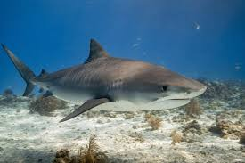

Introduction
Great white sharks (Carcharodon carcharias) are among the most recognised shark species in the world. They inhabit temperate coastal waters and are known for their size, power and highly developed hunting strategies. Scientific research has revealed that these animals are far more complex than their fearsome reputation suggests.
Key facts
- Average length: Adults commonly reach between 4 and 5 metres.
- Distribution: Found in temperate and some subtropical coastal waters worldwide.
- Diet: Primarily marine mammals, large fish and occasionally seabirds.
- Lifespan: Estimates suggest they can live for more than 70 years.
Why they matter
As apex predators, great white sharks help regulate populations of prey species and maintain balance in marine food webs. Their presence can influence the behaviour and distribution of other animals, which in turn affects the health of seagrass beds, coral reefs and coastal ecosystems.
Understanding their biology and behaviour supports conservation efforts and helps reduce conflict between sharks and people.